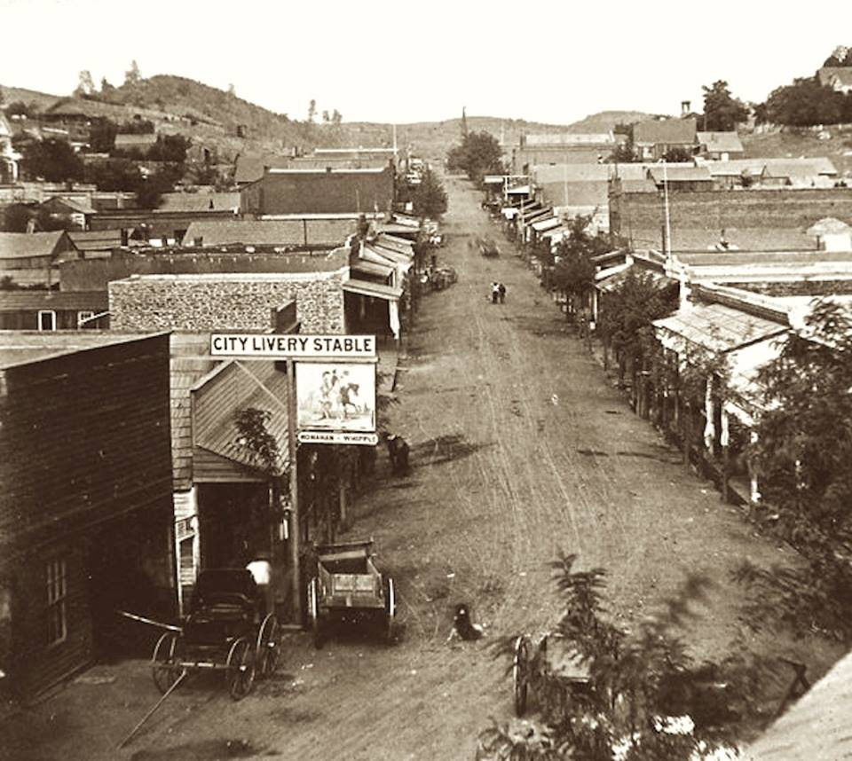
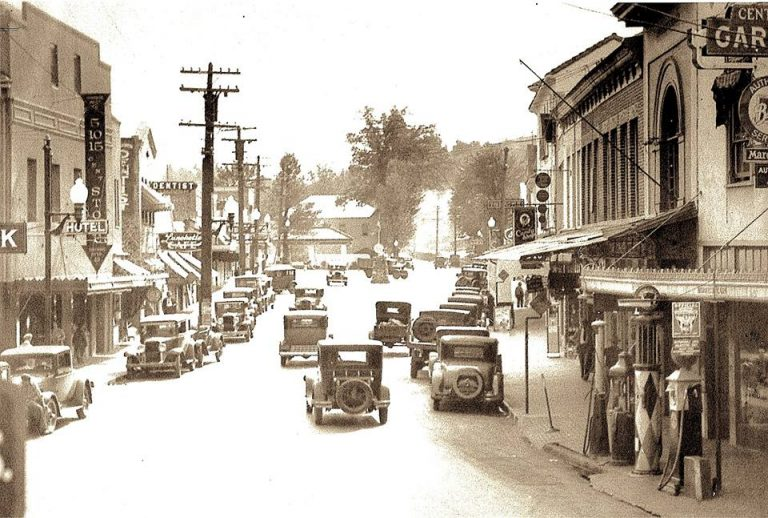

Gold Rush Era: Sonora was founded in 1848 during the height of the California Gold Rush. The discovery of gold in the nearby Sierra Nevada foothills attracted a massive influx of miners and settlers to the region. Sonora quickly became a bustling center for gold mining activities and served as a supply and transportation hub for the surrounding mining camps. Incorporation and Development: In 1851, Sonora was officially incorporated as a town. As the mining boom continued, Sonora experienced rapid growth, with businesses, saloons, hotels, and residences popping up to cater to the needs of the miners and prospectors. The town became an important commercial and administrative center in the area. Chinese Influence: Sonora, like many other Gold Rush towns, saw a significant influx of Chinese immigrants seeking their fortunes in gold mining. The Chinese community in Sonora played a vital role in mining, agriculture, and other industries, and their cultural influence can still be seen in the town's historic architecture and artifacts. Transportation and Communication: Sonora benefited from the development of transportation and communication infrastructure. The arrival of the railroad in the late 1800s improved connections with other parts of California and facilitated the transportation of goods and people. Telegraph lines were also established, connecting Sonora to the wider network of communication. Decline and Revitalization: As the Gold Rush waned, Sonora experienced a decline in mining activity. However, the town found new life as a center for agriculture, logging, and tourism. The natural beauty of the surrounding Sierra Nevada Mountains and the establishment of Yosemite National Park in 1890 attracted visitors and helped sustain the local economy. Preservation and Tourism: Today, Sonora's downtown area retains much of its historic charm and architecture. The town has made efforts to preserve its heritage and promote tourism, with many buildings listed on the National Register of Historic Places. Visitors can explore Main Street's historic buildings, enjoy festivals and events, and learn about the area's rich history at the Tuolumne County Museum.
 